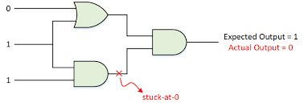
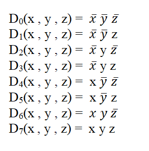

Theory
Stuct-at-Fault
A Stuck-at fault (SAF) is a logic-level fault that mimics a manufacturing defect on a digital device, circuits, etc. A Stuck-at-Fault is of two types: stuck-at-0 (SA0) and stuck-at-1 (SA1) fault. Stuck at faults occur when a line is permanently stuck to Vcc or ground giving a faulty output. This line may be an input or output to any gate. Also this fault can be single or multiple stuck at faults, Although in this experiment we will only talk about single stuck at faults.
Example of stuck-at-0:

Example of stuck-at-1:

A fault model is an engineering model of something that could go wrong in the construction or operation of a piece of equipment. From the model, the designer or user can then predict the consequences of this particular fault. To detect such fault, a suitable fault model is used. The user deliberately make Vcc or grounded positions and checks output. The user checks all types of faults that may occur in the circuit.
Basic fault models in digital circuits include the stuck-at fault model, the bridging fault model, the transistor faults, the open fault model, the delay fault model, etc. In the past several decades, the most popular fault model used in practice is the single stuck-at fault model. To use this fault model, each input pin on each gate in turn, is assumed to be grounded, and a test vector is developed to indicate the circuit is faulty. The test vector is a collection of bits to apply to the circuit's inputs, and a collection of bits expected at the circuit's output. If the gate pin under consideration is grounded, and this test vector is applied to the circuit, at least one of the output bits will not agree with the corresponding output bit in the test vector. The stuck-at fault model is a logical fault model because no delay information is associated with the fault definition. The single stuck-at fault model is structural because it is defined based on a structural gate-level circuit model.
Decoder (binary decoder)
In digital electronics, a binary decoder is a combinational logic circuit that converts binary information from the n coded inputs to a maximum of 2n unique outputs. The name “Decoder” means to translate or decode coded information from one format into another, so a binary decoder transforms “n” binary input signals into an equivalent code using 2n outputs. If a binary decoder receives n inputs (usually grouped as a single Binary or Boolean number) it activates one and only one of its 2n outputs based on that input with all other outputs deactivated. Decoders are also available with an additional “Enable” input pin which allows the decoded output to be turned “ON” or “OFF” by applying a logic “1” or logic “0” respectively to it. So for example, when the enable input is at logic level “0”, (EN = 0) all outputs are “OFF” at logic “0” (for AND gates) regardless of the state of the inputs A and B.
The main difference between demultiplexer and decoder is that a demultiplexer is a combinational circuit that accepts only one input and directs it into one of the several outputs. On the contrary, the decoder is a combinational circuit that can accept many inputs and generate the decoded output.
Binary Decoders are most often used in more complex digital systems to access a particular memory location based on an “address” produced by a computing device. Commonly available decoder IC’s are the TTL 74LS138 3-to-8 line binary decoder or the 74ALS154 4-to-16 line decoder. They are also very useful for interfacing to 7-segment displays such as the TTL 74LS47.
An example of a binary decoder is shown below:

3 to 8 decoder:
The number of available inputs are 3 and outputs are 8. Let us represent the inputs and outputs by symbol letters. Let us represent the inputs by S0, S1, and S2; and the outputs by D0, D1, D2, … D7. This decoder circuit gives 8 logic outputs for 3 inputs and has a enable pin. The circuit is designed with AND and NAND logic gates. It takes 3 binary inputs and activates one of the eight outputs. 3 to 8 line decoder circuit is also called a binary to an octal decoder. The block diagram of a simple 3x8 decoder is given below:
We can consider inputs as x, y, z and try to implement decoder using logic gates. Below is the truth table of it:
Using the truth table, we can write outputs D0 to D7 in terms of inputs x, y and z. Then it can be implemented into logic gates. The logic functions are shown below:

Higher order decoders can be constructed from lower order ones. This is explained with an example below.
4-to-16 decoder using 3-to-8 decoder
The parallel inputs x, y & z are applied to each 3 to 8 decoder. The complement of input, w is connected to Enable, E of upper 3 to 8 decoder in order to get the outputs, D0 to D7. These are the first eight minterms. The input, w is directly connected to Enable, E of lower 3 to 8 decoder in order to get the outputs, D8 to D15. These are the last eight minterms.

when the w is at logic '0' the above decoder is turned on and gives output (D0 to D7), and when w is at logic '1' the below decoder is turned on and gives output (D8 to D15).The truth table of the 4 to 16 decoder is as follows :-